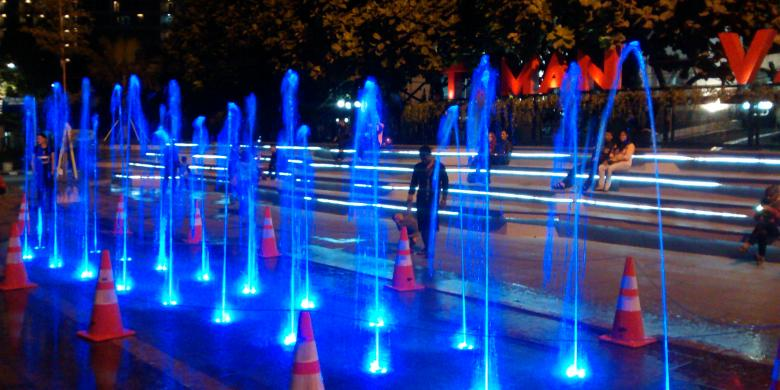
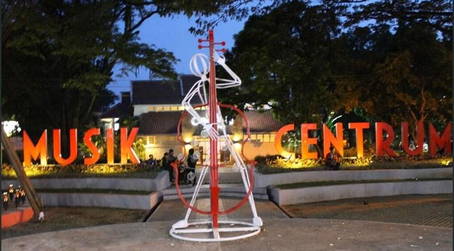

Bandung adalah ibukota Provinsi Jawa Barat. Mengapa dinamakan kota Bandung? Ada beberapa pendapat mengenai asal usul nama tersebut. Nama Bandung berasal dari kata “bendung” atau “bendungan”. Dahulu kala, Sungai Citarum terbendung oleh lava yang berasal dari Gunung Tangkuban Perahu. Akibatnya, daerah antara Padalarang hingga Cicalengka (± 30 kilometer) dan daerah antara Gunung Tangkuban Parahu hingga Soreang (± 50 kilometer) terendam air dan menjadi sebuah telaga besar yang kemudian dikenal dengan sebutan “Danau Bandung” atau “Danau Bandung Purba”.
Menurut penelitian, Danau Bandung lama-kelamaan surut. Di bekas daerah danau tersebut, berdirilah pemerintahan kabupaten Bandung. Jadi, secara historis asal-muasal nama Bandung itu berasal dari Danau Bandung.
PPID KOTA BANDUNG
Jl. Wastukancana No. 2 Bandung
4234892
ppidutama.kotabandung@gmail.com
ppidutama.kotabandung@bandung.go.id